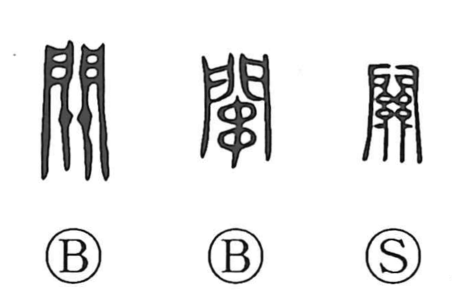

関

Kun: kakawaru, kakari | On: kan, seki
barrier ・ checkpoint ・ relation ・ connection ・ to close
Explanation
Originally written as 關, this character combines the gate sign 門 with the figure of a horizontal locking bar laid across the doors. Its primary sense is the concrete act of shutting a gate. From the idea of fastening with such a structural device, the graph extends to mechanisms or apparatuses (as in 機関), and to the official barrier or checkpoint that controls passage (関, 関所). In compounds like 関係 “relationship,” it evokes two sides bounded and held together by an intervening barrier, hence the notion of connection.